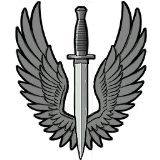

AimController
Be Like A Pro
Building a Controller with Motion Abilities for PC Gaming
It correspond to a program, receiving data from physical programmable circuit board, like Arduino or Teensy, where are connected sensors as inputs, for simulating outputs as Virtual Xbox Controller or Virtual Keyboard/Mouse or Interception or Dualshock4 Controller or vJoy Controller. No input lag, no delay, no stick drift, no gyro drift, no stuttering, fine aiming, adpated and custom control, competitive and enjoyable. You aiming or driving with competitive-immerssive-intuitive-natural-emotional controls with motion abilities, as well as pro player. It's possible to associate any controller or create one with motion sensors, like accelerometer and magnetometer (to replace IR cam and sensor bar), in order to task as Wiimote and Nunchuck, but exactly like Razer Hydra Controller in shape (without the magnetic ball), to play on PC at games with Steam. Let's see...


Considerations About the Program
The program is made for being more competitive than usual, but it ask a lot of experiences,
and to want aiming or driving like in virtual reality games. The simple way is to connect
sensors to Arduino or Teensy, and receive data in a program to simulate a virtual Xbox
controller or virtual keyboard and mouse or interception or DS4 controller or virtual
joystick. Then with a 3D printer, build an armor for a controller or two armors for a
splitted controller. It's possible to print armors in a multimedia center or a public
workshop with low cost. I have programed with Teensy, Arduino, IR cam, WebCam, Microphone,
CronusMax, Cronus X-Aim, GIMX, GlovePie, Chiaki, PS Remote Play, Devreorder, Interception,
Scp, ViGEm, vJoy, AirMouse, Keyboard, Mouse, Wiimote, Joycon, Joycon Charging Grip, Pro
controller, DualShock4, Dualsense, Xbox controller, PPJoy controller, Six Axis controller...
For all games, on Linux, Windows, Playstation, and Xbox. I have a lot of knowledges in
controllers and motion controls, and so I can say that console isn't adapted to play games
with motion controllers, because less than 10% of console games are playable with. PC is the
ultimate platform to play games with motion controllers and to create one, because more than
90% of PC games are playable with. I prefer emulate inputs with sensors the controller I
built, and simulate outputs with a program the Human Interface Device (HID) to play all
games on PC. I choose this method because with microcontrollers or on consoles you can't
have any accuracy. Also you prevent the built controller to be recognized and connected by
games and launchers on PC like it's doing actually with console controllers and it's very
weird. It have broke all the works I did with several decades on it. Another important
thing, about Cronus and Titan adapters, is that console constructors are hating it to play
on their consoles, and so potentially you will be forwarded on hacked lobbies from
matchmaking, and it's weird controls how the adapters are running but also how games are
configured on consoles, and finally comparing consoles to PC, you can have better settings
in terms of optimization and security with a PC, like I did. There are nice tutorials, here and here on Six Axis controllers to
start easy playing with motion controls without annoying setting it up. You can find here the driver for Flydigi controllers.
You can use August LP310 Remote Airmouse, used normaly for Power Point presentation, but for
Top Down Shooters or First Person Shooters, combined with a controller. The native support of
controllers in PC games, not native controllers known as keyboard/mouse and Xbox controller, is a very bad idea, because it result in low
optimization of games and low or bugged or not running handle of controllers like with
DirectInput controllers or Dualsense, also it's not in favor of some developers who want
practice on controller support, and it's a time consumer for game developers. I did better
controller support than native controller support in games of game developers, and with
better and infinite customizations. My goal for building a custom controller in terms of
polling rates is to reach a number under 14 milliseconds, it's largely doable, and it's
sufficient, because a game is caped generally at 30-60 FPS, a big screen have a latency of
around 10 milliseconds, and the ping of a server is around 20 milliseconds, so there's no
need to go far under and I already checked with a time watcher the polling rates, no need to
eat one CPU for nothing, but just lagging. But it stay always better to simulate a Keyboad/Mouse, because of the deadzone
unsignifiant, contrary to the deadzone of a controller, and sometimes very badly handle at
the output of the deadzone too sensitive, but also the lowest sensitivity when aiming down
sight not competitive at all, and almost impossible to have a good aim by tricking the
sensitivities, or even the maximum sensitivity toggle after only a certain amont of timing
at maximum path of the stick. I made the showcase here.
To note, when you modify library of Teensy, the path of files are in the following folder:
"C:\Program Files (x86)\Arduino\hardware\teensy\avr\cores\teensy3".
When you create a custom controller, you need to know about Teensy 3.6 device the following:
• USB Port Serial + Keyboard + Mouse + Joystick.
• French Keyboard (France).
• Teensy script SerialCommunication.ino.
• Teensyduino plugin for Arduino Windows 1.8.13 for configure device and load script.
• Mouse sensitivity to maximum and accuracy enable shall be set in mouse settings under control panel.
• For using several Teensy devices, it needs to change only Message Magic.
• All exe and DLL shall be created in release mode.
• Open CMD Dos prompt command with administrative privilege and type fsutil behavior set memoryusage 2,
then restart your PC, to reduce latency.
It needs to connect the Joycon Left before the Joycon Right, and to not move Joycons while connecting, but in this order it
needs to be fast to not move. The key settings for Fortnite are as following:
move = ZSQD
jump = Space bar
sprint = Left shift
crouch = A
fire = Left mouse button
target = Right mouse button
reload = R
use = F
harvesting tool = V
weapon slot 1 = &
weapon slot 2 = é
weapon slot 3 = "
weapon slot 4 = '
weapon slot 5 = (
wall = U
Floor = C
stairs = Y
roof = X
trap = P
place building = Left mouse button
change building material = Right mouse button
building edit = E
toggle map = Tab
driver push = Space bar
driver exit = A
The key settings for Call of Duty are as following:
move = ZSQD
jump = Space bar
sprint = Left shift
fire = Left mouse button
target = Right mouse button
reload = R
use = F
cut = V
toggle score / toggle map = Tab
special equipement = A
switch auto fire / shot per shot = Y
armor = U
tactical = T
deadly = G
lie down = Left Alt
crouch = C
switch weapon = X
marker = Left Ctrl
streaks = &, é, ", ', (
You can easy use two microcontrollers connected with pins, one simulating a joystick or a xbox controller to console adaptative controllers or Cronus or Titan, and one sending to the first one and receiving infos to program in real time for remove deadzone or change bindings, connected to your PC, and with sensors.
It's possible to connect a new gen Xbox controller to retro consoles via bluetooth with microcontrollers and libraries like shown
in the following videos:
• https://www.tiktok.com/@handiarcade/video/7309233126801263905.
• https://www.tiktok.com/@handiarcade/video/7303676609930824993.
The best way to create a motion controller is to attach buttons, accelerometers, gyroscopes, and magnetometers to an Arduino card,
then make it a joystick or a Xbox controller then wire it to both PC and device with a USB hub using male/male wires and micro USB
from Arduino card to the USB hub, you can change mapping/sensitivity/deadzone on PC with an interface and use cronus or titan devices
to make it compatible on consoles, or use it directly on PC.
When you create a custom controller, you need to know about Arduino device the following:
• 2 pcs card ATMEGA32U4 pro micro arduino devices.
• Tools set to arduino leonardo.
• Mouse click or mouse move or keyboad key / type click or wheel value or type key / down or x or down / up or y or up.
Principle for pining 2 arduinos with only 16 pins for creating a controller for arduino out using serial port for arduino in as following:
• In -> slower
int statePin = 13; // state connected to digital pin 13
int valstate = 0; // variable to store the write value
int numPin = 12; // num connected to digital pin 12
int valnum = 0; // variable to store the write value
void setup() {
pinMode(statePin, OUTPUT); // sets the digital pin 13 as output
pinMode(numPin, OUTPUT); // sets the digital pin 12 as output
}
void loop() {
digitalWrite(statePin, valstate); // sets the state to the button's value
digitalWrite(numPin, valnum); // sets the num to the button's value
}
• Out -> faster
int statePin = 7; // pushbutton connected to digital pin 7
int valstate = 0; // variable to store the read value
int numPin = 6; // pushbutton connected to digital pin 6
int valnum = 0; // variable to store the read value
void setup() {
pinMode(statePin, INPUT); // sets the digital pin 7 as input
pinMode(numPin, INPUT); // sets the digital pin 6 as input
}
void loop() {
valstate = digitalRead(statePin); // read the input pin
valnum = digitalRead(numPin); // read the input pin
}
Principle for send and receive data of down/up buttons and analogic values:
• Send ->
= 0
+= 1
+= 10
+= 0
+= 1000
= 1011
• Receive ->
String value = "This is a string.";
int startIndex = 5;
int length = 2;
String substring = value.Substring(startIndex, length);
Console.WriteLine(substring); // The example displays the following output: is
• Send analogic ->
with * 1000 and +=
Joycon instead of Wiimote:
A nice idea for recycling broken Wiimote still able to connect on a PC, is to tranfer the IR cam, by rewelded it, at the end of a
rail of a Joycon to aim with Joycon like with Wiimote in FPS or rail shooter games.
Any HID on any console:
I made a program receiving datas from Arduino and Teensy, I also already simulated Keyboard/Mouse and Joystick inputs
with Teensy and Arduino receiving datas from a program. To play on consoles, it's possible to simulate a Xbox Controller
with Arduino or Teensy, and sending datas to another Arduino or Teensy, connected to pins together for finally connecting
it to an simple adapter on the market already existing.
When reading data of IR cam with x and y values from 0 to above 1000, and use receive data in a program, you can add 10000
to x then multiply by 10000 and then add y in the script, after that you can divide by 10000 and substract by 10000, so
you have a number with the decimal sparator like x.y and so you just need to truncate as following in the program:
• Math.Truncate(n) will return the number before the decimal point (x).
• So, 12.3 would return 12, and -12.3 would return -12. You would then subtract this from your original number.
• n - Math.Truncate(n) would give 0.3 for both 12.3 and -12.3 (0.y).
• And finally you multiply by 10000 for y, and x is just your truncated number from te first operation.
• If you want more reading data, you can add 20000 for gyroscope and accelerometer, and add 30000 for digital buttons, and
then add 40000 for stick, and also add 50000 for analogic triggers, in order to differentiate which inputs you receiving
data when numbers you receive data start with 1, 2, 3, 4 or 5.